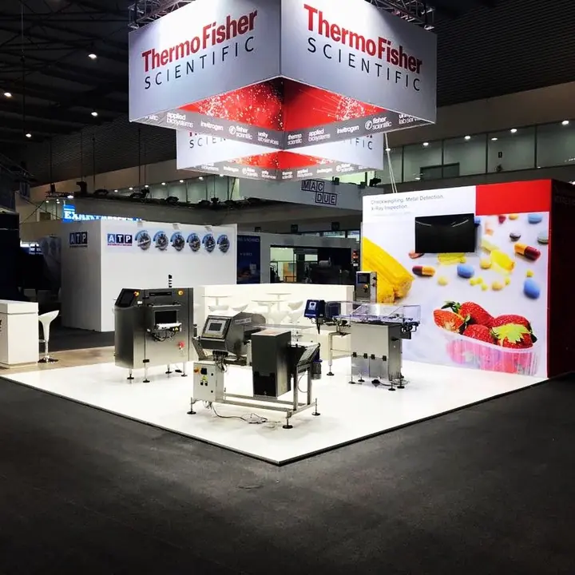
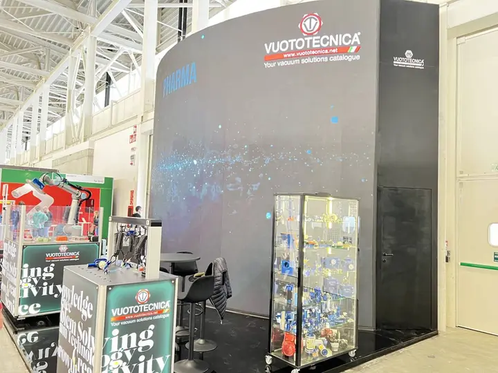
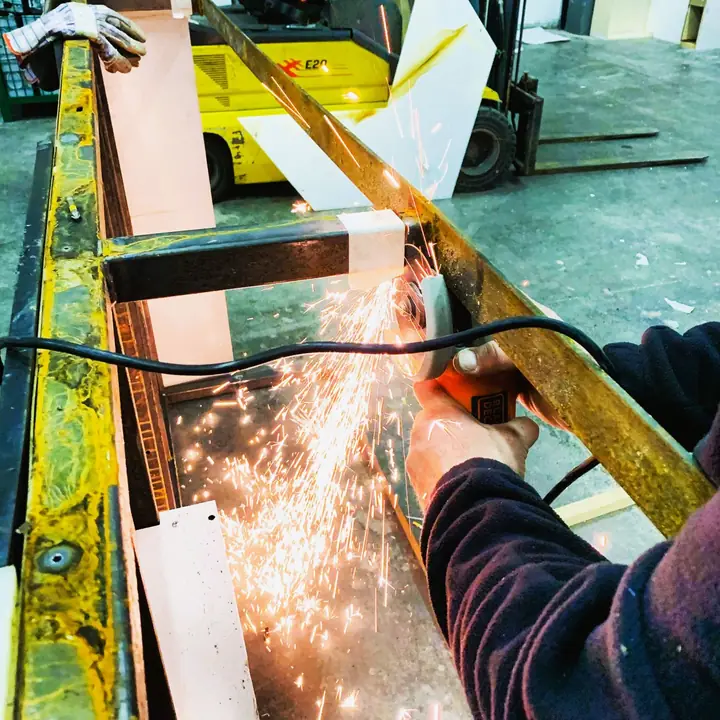

Il problema
«Il prodotto va spiegato, e in fiera nessuno ha tempo.»
Showfactory
Uno stand che fa la demo al posto vostro.
Ledwall, postazioni demo e percorsi integrati nella struttura: il visitatore capisce il prodotto in trenta secondi.
Stand per tecnologia e medicale
Questa pagina è per SYNLAB Italia. Showfactory progetta e costruisce stand per aziende tecnologiche e medicali: postazioni demo, ledwall e regia integrati nella struttura. Tutto prodotto e montato da noi.

E come li risolviamo, con persone e officine nostre.
«Il prodotto va spiegato, e in fiera nessuno ha tempo.»
Ledwall, postazioni demo e percorsi integrati nella struttura: il visitatore capisce il prodotto in trenta secondi.
«Ledwall da un service, struttura da un altro: l’incastro si scopre la notte prima.»
Li gestiamo internamente, quindi schermo e scenografia si disegnano insieme. Niente prove di incastro alle due di notte.
«L’ente fiera chiede tavole, calcoli e certificazioni, e il tempo stringe.»
Disegni tecnici, relazioni e certificazioni dei materiali per l’approvazione dell’ente fiera: voi pensate al prodotto, noi al padiglione.
«Chi monta non è chi ha costruito, e in fiera nessuno sa rispondere.»
Progettiamo, tagliamo il legno, saldiamo il ferro e montiamo con le nostre squadre. Zero subappalti, un solo numero da chiamare.
Progetti costruiti nelle nostre falegnamerie e montati dalle nostre squadre.




Cinque passaggi, sempre gli stessi, con un solo referente.
Planimetria, metri quadri e date. Basta anche una call.
Render 3D e preventivo voce per voce.
Tavole per ente fiera o location, calcoli e permessi.
Falegnameria e carpenteria interne, prova in officina.
Le nostre squadre, con un solo referente in cantiere.
Mandateci planimetria e prodotti da mostrare: vi rispondiamo con un’idea concreta e un preventivo voce per voce.
FrancescoFounder, Showfactory
allestimenti@showfactory.events